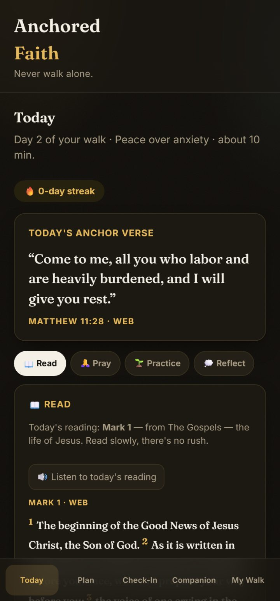
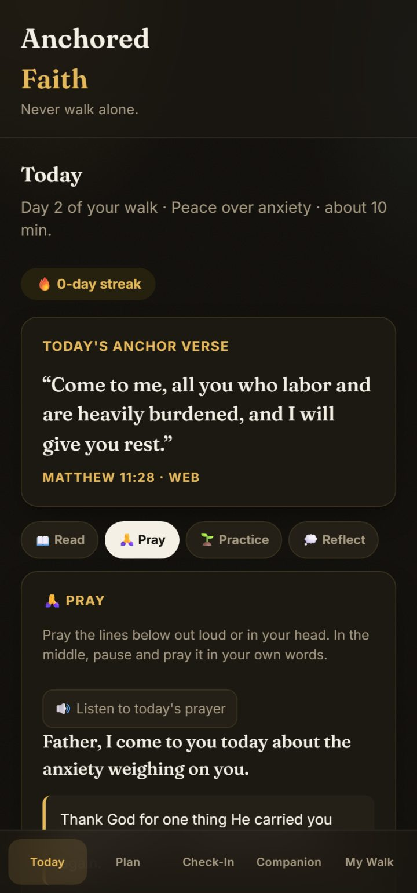
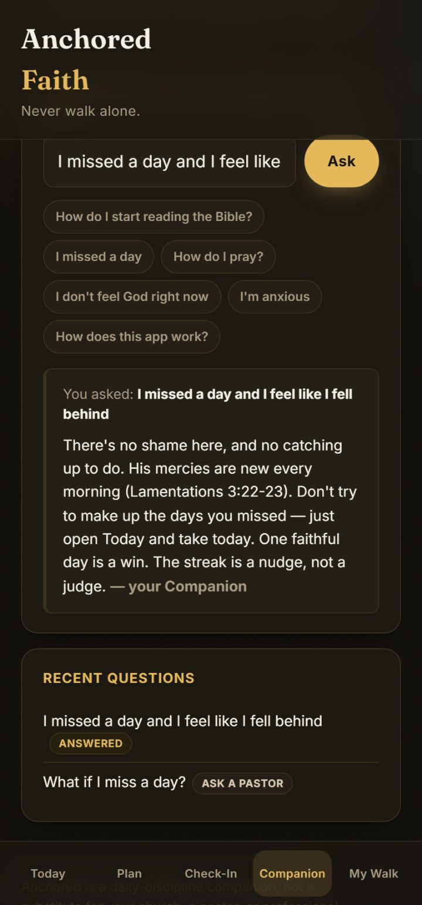

A dated 21-day plan that makes time with God a daily habit, in 10 minutes a day.
(No catching up. No guilt. No wondering what to read.)
The heart is usually there. What gives out is the plan, around day four, when life gets loud and nothing tells you what to read next or what to do after a day you miss. This dated plan carries you through that stretch.
The first morning feels great. Then day four arrives: a rough night, a packed morning, and you lose track of where the plan left off. One missed day turns into three, and the guilt makes coming back harder than starting did. Most plans go quiet the day you fall behind and leave you to find your own way back. The 21-Day Anchor was built to fix that: a dated plan that hands you the next step every day, whether you showed up yesterday or not.
You don't feel your way into a walk with God. You show up your way into it — one small day at a time.
Anchored doesn't run on one person's story. It fixes a gap you'll find in almost every faith app and devotional: they hand you content, then go quiet the moment you fall behind. Few of them build a page for the day you miss. The 21-Day Anchor does exactly that, with grace written into the plan itself instead of tacked on at the end.
30-day, 100% money-back, no-questions-asked. Use it, and if it doesn't help you build a daily time with God that sticks, email support@anchoredfaith.app and get every cent back. You keep the plan. The only risk is another month of meaning to and never starting.
A devotional book runs $15–$25 and still leaves you deciding when and how. Free plans hand you a list and disappear the day you fall behind. This is $7, once, for the full 21-day dated plan, the prayers written out word for word, and the "I missed a day" page free plans leave out. Seven dollars against another season of meaning to grow closer to God and never quite starting.
Your 21 days are yours to keep either way, with no subscription and no auto-charge. If you want to keep going, the Anchored app takes over. It holds your streak, sends the day's verse, and your Companion checks in when you tend to drift and answers your faith and Bible questions any time. Founding members lock in $59/year for life, and the $7 you pay today comes off it, so your first year is $52 (or $8.99/month if you'd rather). Same 30-day money-back guarantee. It's optional, and the plan is yours regardless.
No subscription, no risk. One payment of $7 gets you all 21 days, yours to keep, backed by a 30-day, no-questions money-back guarantee. You can start tomorrow morning.
Start The 21-Day Anchor — $7 →Here's a real piece of the daily rhythm: a prayer from inside Anchored, read aloud in the free in-app audio. Not a preview reel — this is the actual product.



Real screens from inside Anchored — not a preview reel. No fake reviews, no borrowed testimonials. The honest story of who's behind this is in "Where this comes from" above.
P.S. Whatever you decide, the guarantee stands: if the 21-Day Anchor doesn't help you build a habit that sticks, email us any time in the first 30 days and get every cent back, no questions asked. You keep the plan either way.
One payment of $7, yours to keep, with a 30-day money-back guarantee. Don't let another week of meaning-to slip by.